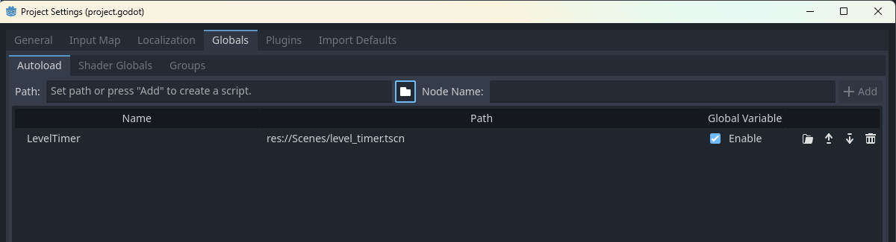
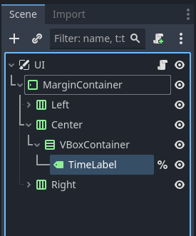

IMPORTANT! This module requires the Hazard Setup and UI modules to be completed first!
On this page we will make the game a more stressful by adding a time limit!
In order to have a timer we need, well, a timer. Create a new scene and choose a Timer node as the root node. You can keep all of it's settings as default, but let's rename the node LevelTimer. We then need to save the scene. Next, go to your project settings under the autoload tab and press the file icon next to path. Find where you saved your level timer scene and press add.
Now we can access our LevelTimer from anywhere. To start, navigate to your world scene. Open your world script (or attach one to your world node if you do not have one) and at the top add a new export variable called level_time.
@export var level_time = 180Next, in the world script's _ready function, we can start the LevelTimer using the level's time limit using the following line of code:
func _ready():
LevelTimer.start(level_time)Of course, right now when the timer finishes, nothing happens. To fix this go to the player script, and add the following line of code into the player's _ready function:
func _ready():
LevelTimer.timeout.connect(die)This line of code is another way to connect a signal to a node. In this case, the player will call it's die function when the level timer reaches 0.
Now, while we have all the functionality working, we still cannot see how much time we have left. In order to fix this lets go to our UI scene. Selecting the Center node, create a new VBoxContainer node as a child, then create a new Label node as a child of the v-box container.
Select the TimeLabel, right click it and select Access as Unique Name, then open your UI script (or attach a new one to the UI's canvas layer if you do not already have one.) In the script's _process function add the following line of code:
func _process(delta):
%TimeLabel.text = str(int(LevelTimer.time_left / 60)).pad_zeros(2) + ":" + str(int(LevelTimer.time_left) % 60).pad_zeros(2)And You are done! Go ahead and set your level(s) time limits and try it out! Once you are done go ahead and try another module.